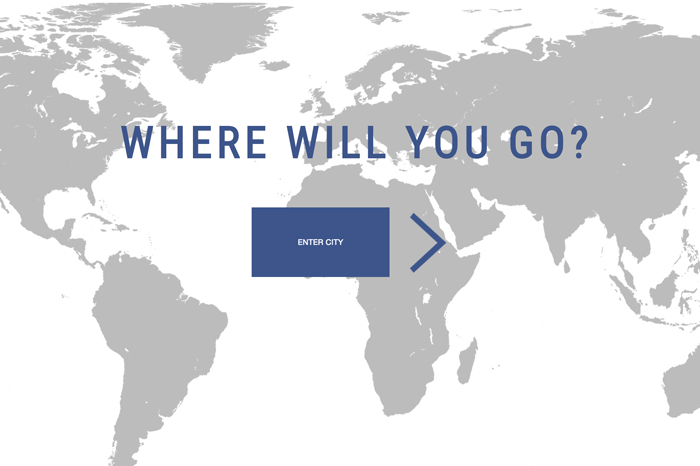
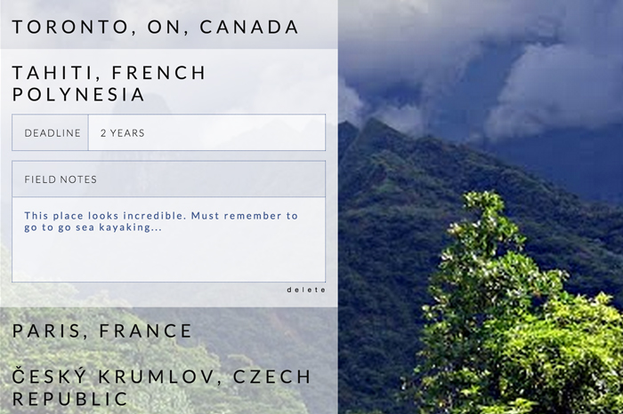
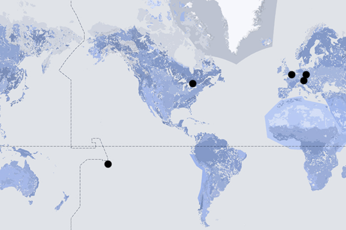

THE LIST
a bucket list app for travel destinations
Using the Panoramio and Google Places APIs, I created a visual bucket list app for users to save locations they want to visit.
Users can edit and save field notes and timeframes (without page reload) for each location and see a customized google map of all of their saved places.



LOVINGLY MADE WITH: RUBY ON RAILS, BACKBONE, GOOGLE PLACES API, PANORAMIO API, GOOGLE MAPS & CUSTOM RESPONSIVE CSS